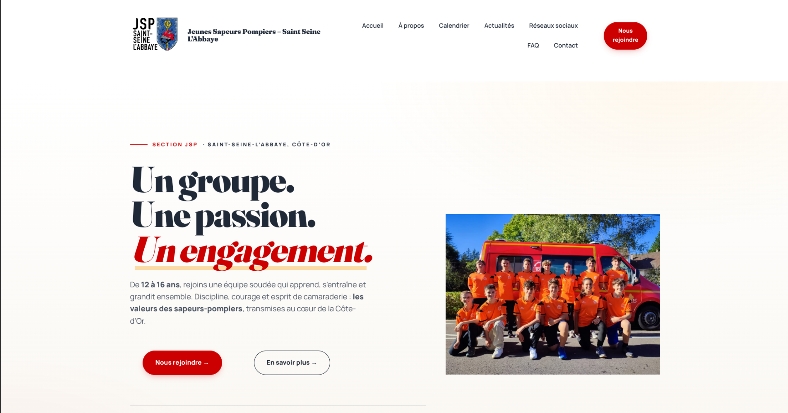
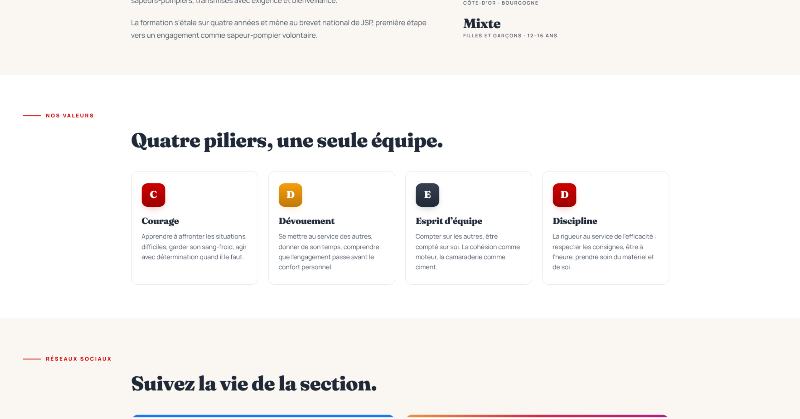
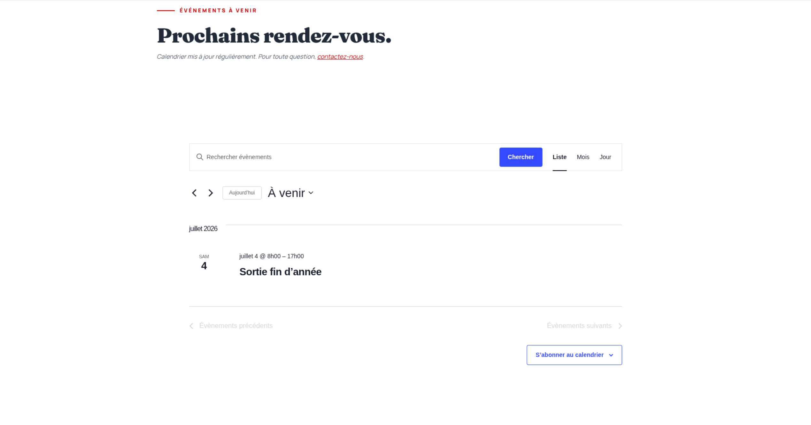

Site JSP Saint-Seine
Site réalisé pour les Jeunes Sapeurs-Pompiers de Saint-Seine dans le cadre d'une commande réelle. L'objectif était de fournir à l'association un outil de communication autonome : les responsables peuvent créer et gérer des articles et des événements sans compétence technique. Le site est entièrement fonctionnel et en ligne.
WordPress
Gestion de contenu
Commande réelle


